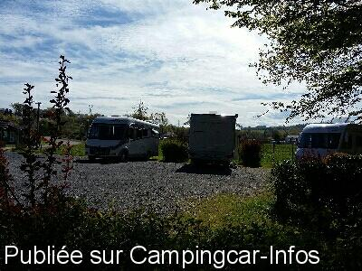
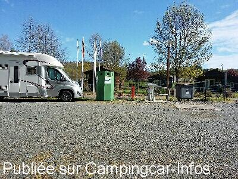
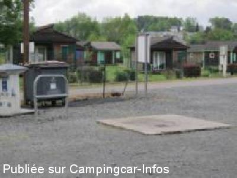
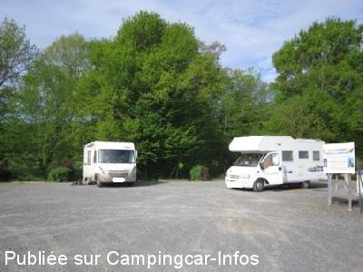
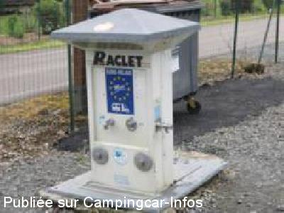
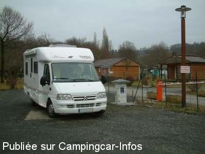

ASN = Aire de services avec stationnement nuit possible de :
DONZENAC
(N° 418)
Accès/adresse :
Accès Rue du 19 Mars 1962
A l'extérieur du camping
19270 DONZENAC
A l'extérieur du camping
19270 DONZENAC
Latitude : (Nord) 45.21877° Décimaux ou 45° 13′ 7′′
Longitude : (Est) 1.51888° Décimaux ou 1° 31′ 7′′
Tarif : 2014
Gratuit
Électricité au camping du 1/05 au 30/09 : 3,60 €
Type de borne : EURO-RELAIS
Services :


Autres informations :
Ouverte toute l'année
10 emplacements partiellement ombragés sur sol stabilisé
Tél Office du Tourisme : + 33 (0)555 856 535
tourisme.donzenac@wanadoo.fr
http://www.donzenac.correze.net/
Cité médiévale, village étape sur l'A20.

Le 12/04/2016 par jerome

Le 12/04/2016 par jerome

Le 07/09/2013 par

Le 07/09/2013 par

Le 07/09/2013 par

Le 24/01/2006 par Michel Perrier
de
jerome
le 13/04/2016 :
Nous étions 7, la nuit dernière à profiter du calme et de la tranquillité de cette aire située au coeur du Limousin. Bien qu'éloignée du centre médiéval de Donzenac, cette aire dispose d'un supermarché tout proche, bien achalandé, et équipé d'une station service. Services et stationnement gratuits, proche de l'autoroute A20, que demander de plus ! Merci Donzenac pour cet accueil chaleureux.
Nous étions 7, la nuit dernière à profiter du calme et de la tranquillité de cette aire située au coeur du Limousin. Bien qu'éloignée du centre médiéval de Donzenac, cette aire dispose d'un supermarché tout proche, bien achalandé, et équipé d'une station service. Services et stationnement gratuits, proche de l'autoroute A20, que demander de plus ! Merci Donzenac pour cet accueil chaleureux.
de
carte
le 17/10/2014 :
Peu d'emplacements,forte pente,pas terrible l'aire;nous sommes repartis
Peu d'emplacements,forte pente,pas terrible l'aire;nous sommes repartis
de
claire70
le 22/08/2014 :
Nous y avons passé mi août mais la place restante était trop en pente. Il faut de grosses cales pour récupérer le dénivelé. Pour rejoindre ce parking il faut prendre la direction camping.
Nous y avons passé mi août mais la place restante était trop en pente. Il faut de grosses cales pour récupérer le dénivelé. Pour rejoindre ce parking il faut prendre la direction camping.
de
Ocral jack
le 04/11/2012 :
le 01/11/2012
Nous y avons passées la nuit , nous étions seuls, camping fermé donc pas d'électricité. Nuit calme.
le 01/11/2012
Nous y avons passées la nuit , nous étions seuls, camping fermé donc pas d'électricité. Nuit calme.
de
Claireformatrice
le 07/08/2009 :
De passage deux fois sur cette aire pendant la semaine. Un calme particulièrement appréciable. Services d'eau propre et vidanges gratuits. Boulangerie au réveil si commande la veille au camping. Électricité pour la nuit à 3€10 sur demande.
Seul impératif : arriver avant 19h, sinon il n'y a plus de place. Ou du moins plus de vraies places, quelques retardataires se glissant parfois dans des espaces insoupçonnés entre 2 autres CC !
Aire très bien !!! Et en plus on y papote volontiers :)
De passage deux fois sur cette aire pendant la semaine. Un calme particulièrement appréciable. Services d'eau propre et vidanges gratuits. Boulangerie au réveil si commande la veille au camping. Électricité pour la nuit à 3€10 sur demande.
Seul impératif : arriver avant 19h, sinon il n'y a plus de place. Ou du moins plus de vraies places, quelques retardataires se glissant parfois dans des espaces insoupçonnés entre 2 autres CC !
Aire très bien !!! Et en plus on y papote volontiers :)
de
Minny StDoul
le 08/04/2009 :
Arrivés vers 16h30, belle aire de services calme, mais à l'extérieur du village à visiter, on ne peut pas tout avoir : ruisseau, calme et les commerces à coté et la gratuité des services. Nous étions tout de même 7 CC. A noter, nous y repasserons. Merci à la Municipalité.
Arrivés vers 16h30, belle aire de services calme, mais à l'extérieur du village à visiter, on ne peut pas tout avoir : ruisseau, calme et les commerces à coté et la gratuité des services. Nous étions tout de même 7 CC. A noter, nous y repasserons. Merci à la Municipalité.
de
BUGHIN Ghislaine
le 19/08/2008 :
Arrêt le 15 août sur la route des vacances. Aire proche d'un parcours de santé pratique pour les enfants - en bord de rivière - grillagée - électricité à partir du camping voisin - eau + vidange gratuites - village magnifique (prévoir 1/2 h pour accès - ça grimpe...) 10 places maxi, ne pas arriver trop tard, à 20 h une seule était disponible.
Arrêt le 15 août sur la route des vacances. Aire proche d'un parcours de santé pratique pour les enfants - en bord de rivière - grillagée - électricité à partir du camping voisin - eau + vidange gratuites - village magnifique (prévoir 1/2 h pour accès - ça grimpe...) 10 places maxi, ne pas arriver trop tard, à 20 h une seule était disponible.
de
Michel Perrier (président de Limousin CC )
le 19/12/2007 :
L'aire de services CC redevient communale: 10 emplacements, services et stationnement gratuits.
Pour info, sur le camping, (attribué en délégation de service public pour 3 ans), le forfait camping-car est en toute saison de 6€ (+ électricité et taxe de séjour). Cordialement.
L'aire de services CC redevient communale: 10 emplacements, services et stationnement gratuits.
Pour info, sur le camping, (attribué en délégation de service public pour 3 ans), le forfait camping-car est en toute saison de 6€ (+ électricité et taxe de séjour). Cordialement.
de
michel37
le 15/08/2007 :
Nous avons payé 8€70 pour la nuit alors que cette aire est prévue gratuite. Renseignement pris auprès de la mairie, le camping a été mis en gérance mais pas l'aire pour le stationnement, une embrouille entre les deux parties.
Nous avons payé 8€70 pour la nuit alors que cette aire est prévue gratuite. Renseignement pris auprès de la mairie, le camping a été mis en gérance mais pas l'aire pour le stationnement, une embrouille entre les deux parties.
de
Olymp42
le 23/04/2007 :
Aire de 10 emplacements au bord de la rivière et très proche de l'autoroute. Nous avons passé deux nuits au calme. La visite du village est à faire (30 minutes à pied à partir de l'aire).
Aire de 10 emplacements au bord de la rivière et très proche de l'autoroute. Nous avons passé deux nuits au calme. La visite du village est à faire (30 minutes à pied à partir de l'aire).
de
engrevals
le 02/02/2007 :
Arrêt vers 1 heure du mat' le week-end dernier (T° négative brrr). Pas un chat, l'aire pour nous tous seuls. Hyper calme avec la petite rivière derrière. L'eau était disponible et gratos. Aire Nickel Chrome!
Arrêt vers 1 heure du mat' le week-end dernier (T° négative brrr). Pas un chat, l'aire pour nous tous seuls. Hyper calme avec la petite rivière derrière. L'eau était disponible et gratos. Aire Nickel Chrome!